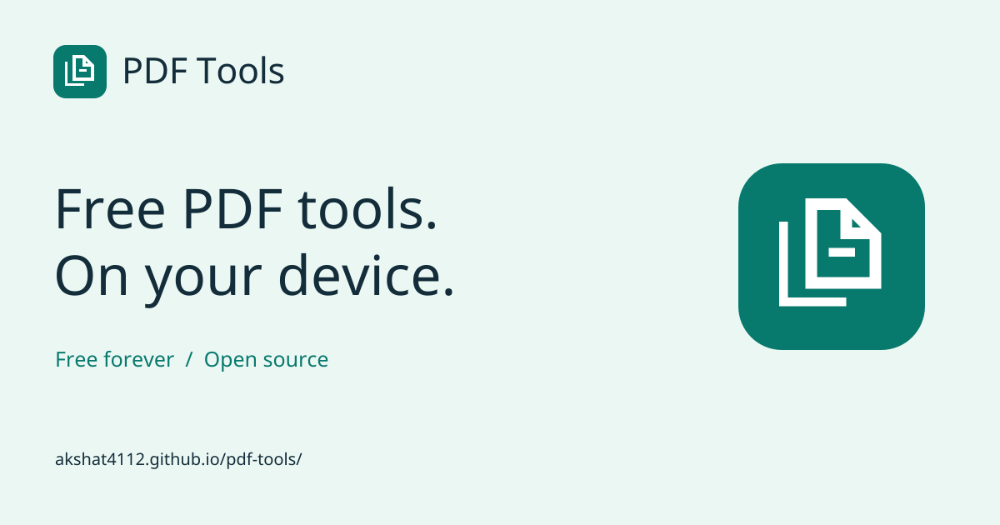

Free PDF tools. On your device.
Identity asset review for PT-BRAND-003. These header samples demonstrate logo sizing; the application redesign is a later task.
Primary logo · teal mark and ink wordmark
Dark surface · teal mark and white wordmark
Single-color artwork · ink
Single-color artwork · reversed white
Files processed on your device.
